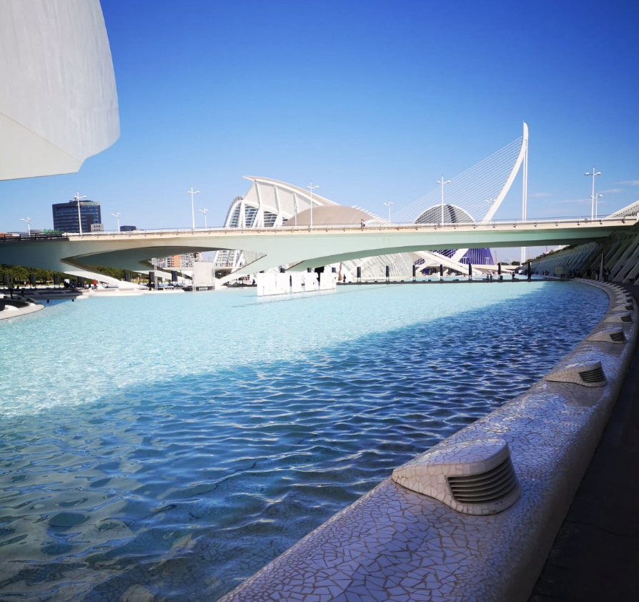

Bleisure
If you ever ran out of money because of travelling, find a job which offers both!
-Hilda Amponsah-
Bleisure: the art of combining business + leisure travel into one trip.
Other than my passion for food (eating to be exact), one thing I also love to do is to travel.
I remember been
a kid, at 6 or 7 years of age living in Ghana and how my friends living in my neighbourhood and
I would stop the games we were
playing just at the sound of a helicopter or an airplane making its print in the clouds. We
would wave and laugh with joy until the plane
disappeared, or turned into a bird-like machine in the air. Each of us in their
own dream land, imagining sitting in a vehicle so alien-like, yet so intrigueing. That was when I first fell in love with the idea of being a brave soul and travelling some day.
I like to liken the concept of bleisure to the saying "killing two birds with one stone". Traveling can be extremely expensive, especially if you are fresh out of university and without a stable income. It never actually occured to me to focus on finding a job that would allow both the luxury of being able to work as well as travel. After all, if that is your goal after graduation, you can always apply to be an air-hostess and work there for as long as you wish or a PA to some Executive who loves to travel, then at least you won't be missing out. Just know that as time changes so do work life and in 2020, many companies have caught onto this and are offering this bleisure of a lifestyle.
Did you know:
- 39% of Millennial and Gen Z workers wouldn’t accept a job that wouldn’t let them travel. (TripActions)
- 30% of workers would accept lower salaries in exchange for more business trips. (Booking.com for Business)
- In one survey, 90% of respondents said that business travel is essential to company growth. (TripActions)
- And a staggering 92% of business travelers enjoy their quality of life while traveling for work. (NationalCar.com)
Avoid the "What ifs"
Seized every opportunity you get. In the work environment, if you do not openly say
There may never be a next time or nobody knows how long the next opportunity will arise.
Therefore, always cast your stone and see how far it can go. The whole essence of bleisure, is focusing on two
goals.
1. Execute your tasks and do it well!

If you are asked to travel to another country for work, then that should be your primary focus. Ensure that you are on
the same page on the task that needs to be executed as the person who is sending you to this other country.This will allow
the company to trust you with more work trips. Once the task has been executed, it's time to enjoy!
2. Enjoy the Leisure Time!

If your trip covers a weekend, this is the best time to travel. Plan your weekend as if you are going to the country for a vacation
and this way, you will not end up sleeping till 3pm in the afternoon. During the weekend, you can choose to either visit a nearby town or
stay in the same place you are in. An example is when I visit Spain for work. I usually stay there for more than a week so I am certain I will have a weekend there.
Valencia to Barcelona
The city I last visited for work was the beautiful Valencia. Valencia is Spain's third largest city, located on the southeastern coast of Spain, where the Turia River unites with the mediterranean Sea.
I love Valencia for its magnificent architectures, the people, the weather and so much more.
The city is also a stone throw away from the beach and this makes Valencia the perfect place to go for a work trip as well as visit for a holiday.
Therefore for me, there was no reason to travel to another town or city however as it was not my first time,
going to Valencia, I chose to visit Barcelona for the first time.
I only went to Barcelona for the weekend, however it was worth every penny spent. I had my train delayed
for about 1hr 30mins however I still made it (In Spain, if your train gets delayed for certain period of time, you can get your money reimbursed).
Like many countries in Europe, you will find free tour guides in the touristy areas. In Barcelona,
I joined a group at Saint Eulalia, also known as Cathedral of Barcelona. The perfect time to get there is is 9am. Ideally, try get there early
as any time after 12pm, you have to pay to get in. Once you have taken a trip around the cathedral, join any tour group and explore the gorgeous city of Barcelona.